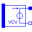
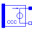

AdditionalsSome useful additional models, e.g., from SPICE2 the polynomial sources |
|
Package Contents
|
POLY function of SPICE2 |
|
|  |
Polynomial voltage controlled voltage source, like SPICE2 |
|
Polynomial voltage controlled current source, like SPICE2 |
|
|
Polynomial current controlled voltage source, like SPICE2 |
|
|  |
Polynomial current controlled current source, like SPICE2 |
Information
This information is part of the Modelica Standard Library maintained by the Modelica Association.
This package contains additional useful models which do not belong to the original SPICE3 model set.